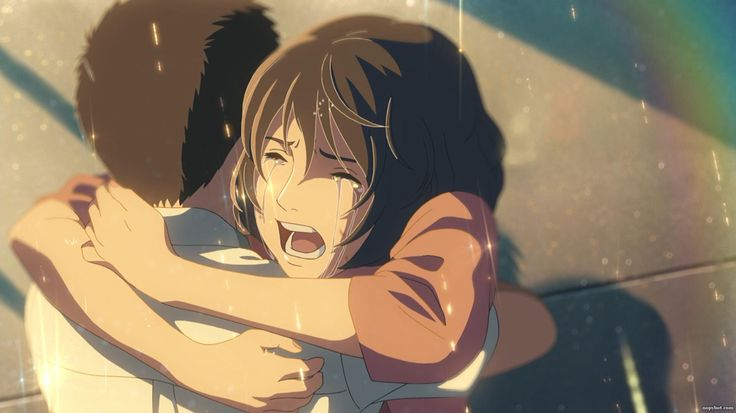
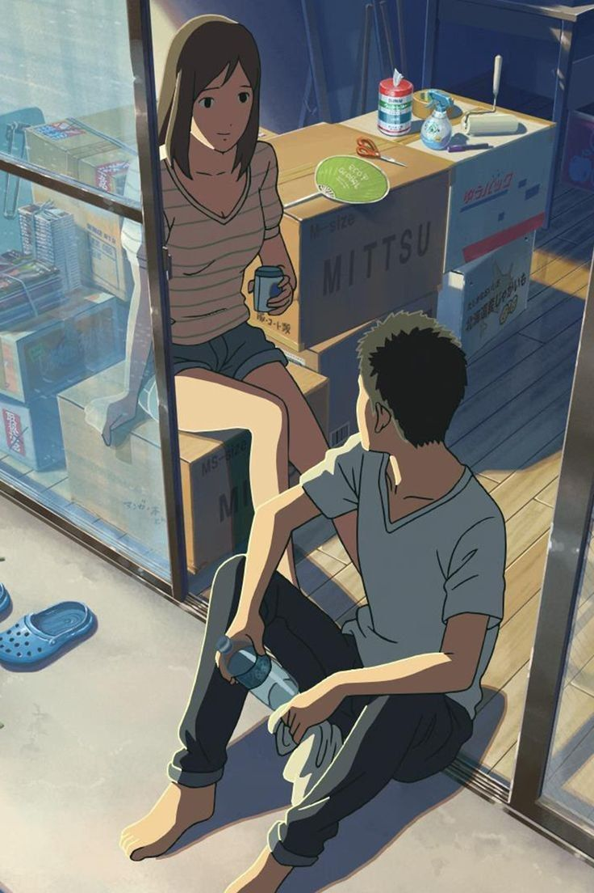
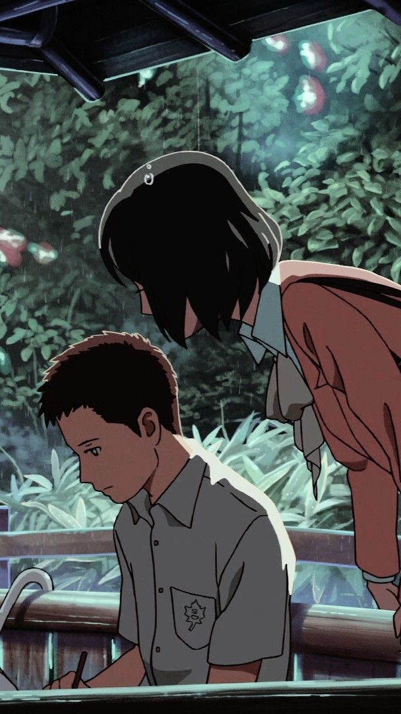
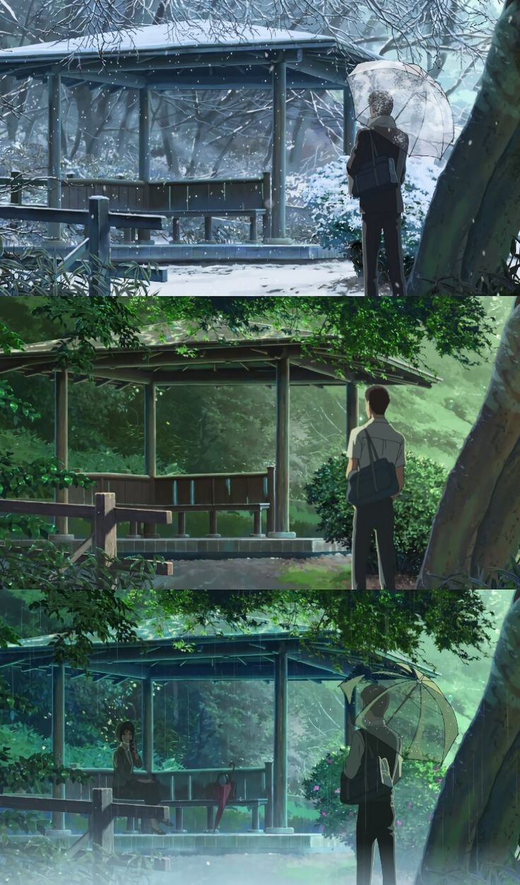

Movie Synopsis
The Garden of Words (Japanese: 言の葉の庭, Hepburn: Kotonoha no Niwa) is a 2013 Japanese anime film written, directed, and edited by Makoto Shinkai, animated by CoMix Wave Films, and distributed by Toho. It stars Miyu Irino and Kana Hanazawa and features music by Daisuke Kashiwa instead of Tenmon, who composed the music for many of Shinkai's previous films. The theme song, "Rain", was originally written and performed by Senri Oe in 1988, but was remade for the film and sung by Motohiro Hata. The film was turned into a manga, with illustrations by Midori Motohashi, and later novelized by Shinkai, both in the same year as the film. The film focuses on Takao Akizuki, a 15-year-old aspiring shoemaker, and Yukari Yukino, a mysterious 27-year-old woman he always encounters at the Shinjuku Gyoen National Garden on rainy mornings. While Takao skips morning classes to design shoes, Yukari avoids work due to personal problems in her professional life.


AIRED : MAY 31 2013
GENRES : DRAMA, ROMANCE, SLICE OF LIFE
DURATION: 45MIN.
RATING: PG-13


